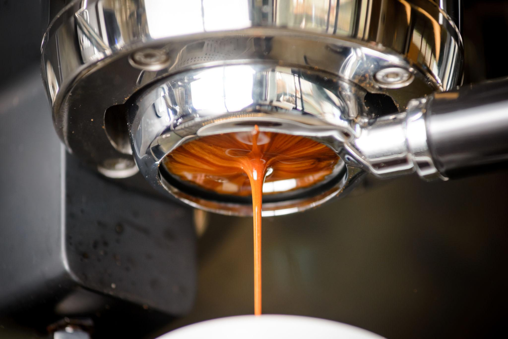

Da lavoura à xícara
Depois da colheita, os frutos passam por uma sequência de operações que transforma o café recém-colhido em grãos prontos para a torra. Cada etapa precisa ser conduzida com cuidado, pois falhas no processamento e no armazenamento podem comprometer aroma e sabor.

1. Processamento e secagem
Os frutos podem ser secos inteiros, em um processo conhecido como via seca, ou ter a casca e parte da polpa removidas antes da secagem. A escolha depende da estrutura da propriedade, das condições climáticas e do perfil desejado. A secagem precisa reduzir a umidade de forma controlada.
2. Beneficiamento e classificação
Depois de secos, os grãos passam pelo beneficiamento, que remove cascas e impurezas. Em seguida, podem ser separados por tamanho, densidade e outros critérios de qualidade. A classificação ajuda a organizar os lotes e orientar sua comercialização.
3. Torra e moagem
A torra transforma as características físicas e químicas dos grãos, desenvolvendo cor, aroma e sabor. Torras mais claras, médias ou escuras produzem resultados diferentes. A moagem deve ser ajustada ao método: mais fina para espresso e geralmente mais grossa para métodos de infusão prolongada.
4. Embalagem, armazenamento e preparo
Após a torra, o café deve ser protegido de umidade, calor, luz e oxigênio. Embalagens adequadas ajudam a conservar suas características. Em casa ou na cafeteria, a proporção entre água e café, a temperatura e o tempo de extração também influenciam o resultado.